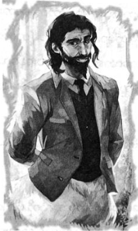

ခိုင်ရွန်၏ ပါတီပွဲ
မြို့လယ်တွင် စစ်ပွဲကြီး ဖြစ်နေပြီး နေရာတိုင်းလိုလို တိုက်ပွဲများကို မြင်နေရသည်။ ပန်းခြံထဲတွင် ဘီလူး တစ်ကောင်က သစ်ပင်များကို ဆွဲနှုတ်နေပြီး သစ်ပင် စောင့်နတ်ကလေးများက သစ်စေ့များဖြင့် ပစ်ပေါက်နေကြသည်။ နောက်တစ်နေရာတွင် ဘန်ဂျမင် ဖရန်ကလင်၏ ရုပ်တုက လက်ထဲမှ သတင်းစာလိပ်ဖြင့် ငရဲခွေးကို ထုနှက်နေ၏။ ဟတ်ဖီးယားတပ်စ် အဆောင်သား သုံးယောက်မှာ ဒရာကာနေးများနှင့် ရင်ဆိုင်နေသည်။
ရပ်တန့်၍ ကူညီချင်သော်လည်း မီးခိုးများနှင့် အသံများအရ တကယ့်တိုက်ပွဲကြီးမှာ တောင်ဘက်တွင် ဖြစ်သည်။ ပါစီ တို့၏ ခံစစ်များ ပြိုလဲစပြုနေပြီး ရန်သူ များမှာ အင်ပါယာစတိတ် အဆောက်အအုံနှင့် နီးကပ်လာချေပြီ။
ပတ်ဝန်းကျင်တွင် ထောင်ချောက်များ ဆင်ထားကြသည်။ ဂျိတ်မေဆင်နှင့် ဟတ်ဖီးယားတပ်စ် အဆောင်သား များမှာ ရုပ်တုများ အဓိကပါဝင်သော စစ်တပ်ကို ဦးဆောင်၍ ရန်သူကို ရင်ဆိုင်နေသည်။ အနောက်ဘက်ခြမ်းကို ဒီမီတာ အဆောင် နှင့် ဂရိုဗာ၏ သဘာဝ နတ်ကလေးများက ကာကွယ်ထားပြီး ထိုဘက်တစ်ခြမ်းလုံး တောကြီး ဖြစ်နေသဖြင့် ရန်သူများ သွက်သွက် ချီတက်လာနိုင်ခြင်း မရှိ။ တောင်ဘက်တွင် ရန်သူများ လောလောဆယ် ရှင်းလင်းနေသော်လည်း မကြာမီ ဘေးမှ ပတ်လာနိုင်၏။ မိနစ်ပိုင်းအတွင်း လေးဖက်လေးတန်မှ အဝိုင်းခံရမည့်ပုံမျိုး ဖြစ်နေသည်။
“ငါတို့ကို အလိုအပ်ဆုံးနေရာကျရင် ဆင်းမယ် …”
“နေရာတိုင်းပဲ ဘော့စ် …”
ရင်းနှီးပြီးသား ငွေရောင်ဇီးကွက်ပုံ အလံကို ပါစီ မြင်ရပြီး အန်နာဘတ်နှင့် အဆောင်သား နှစ်ယောက်မှာ ဟိုက်ပါ ဘိုရီးယန်း ဘီလူးအား ရင်ဆိုင်နေ၏။
“ဟိုမှာ ..”
ပါစီ ညွှန်ပြရာသို့ ဘလက်ဂျက် ချက်ချင်း ထိုးဆင်းသွားသည်။ ဘလက်ဂျက် ကျောပေါ်မှ ခုန်ချလိုက်လျှင် ဘီလူးကြီး၏ ခေါင်းပေါ် ပါစီရောက်သွားပြီး မော့ကြည့်ချိန်တွင် မျက်နှာပေါ်မှ လျှောစီးခုန်ချရင်း နှာခေါင်းကို ဒိုင်းဖြင့် ရိုက်ချပစ်ခဲ့၏။
“ရား …”
ဘီလူးကြီးနောက်သို့ ယိုင်သွားပြီး နှာခေါင်းမှ အပြာရောင်သွေးများ စီးကျလာ၏။ ပလက်ဖောင်းပေါ် အပြေး ဆင်းလာချိန်တွင် ဟိုက်ပါဘိုရီးယန်းဘီလူးမှ အဖြူရောင်မြူများ မှုတ်ထုတ်လိုက်ပြီး ပတ်ဝန်းကျင်တစ်ခုလုံး၏ အပူချိန် သိသိသာသာ ထိုးကျ သွားခဲ့သည်။ ပါစီ ခုန်ချလာသော နေရာတွင် ရေများခဲနေပြီး ပါစီ တစ်ကိုယ်လုံး ရေခဲမှုန်များ ကပ်နေကာ သကြားဖြူးထားသော ဒိုးနပ်မုန့်နှင့်ပင် တူသေးတော့သည်။
“ဟေး … ရုပ်ဆိုးကြီး”
အန်နာဘတ်၏ အော်သံကို ကြားရပြီး ဘီလူးကို ရန်စခြင်းဟု ယူဆရကာ သူ့ကိုလှမ်းခေါ်ခြင်း မဟုတ် ပါစေနှင့်ဟု ဆုတောင်းနေရသည်။ ဘီလူးကြီး အော်ဟစ်ရင်း သူမဘက် လှည့်သွားလျှင် ပါစီ ပြေးဝင်ကာ အကာအကွယ် မရှိသော ဒူးခေါင်းခွက်နေရာအား ဓားဖြင့် ထိုးချလိုက်သည်။
“ဂါး …”
ဟိုက်ပါဘိုရီးယန်း ဘီလူးကြီး ဒူးညွတ်ကျသွားပြီး ပြန်လှည့်လာမည်ဟု ပါစီ ထင်သော်လည်း ရေခဲရုပ်ကြီး ဖြစ်သွားခဲ့သည်။ ဓားနှင့် ပါစီ ထိုးထားသောနေရာမှ အက်ကွဲကြောင်းများ စလာကာ နောက်ဆုံးတွင် တောင်ပြိုသလို ပြိုကျ သွားပြီး အပြာရောင် ရေခဲတုံးများ တောင်လိုပုံ ကျန်ရစ်၏။
“ကျေးဇူး …”
အန်နာဘတ်မှာ အသက်ကို လု၍ ရှူနေရသည်။
“ဝက်ကြီးရော …”
“ဝက်သားကင် ဖြစ်သွားပြီ …”
“ကောင်းတယ် …”
ပခုံးကို လှုပ်ကြည့်နေပြီး ဒဏ်ရာမှာ အန်နာဘတ်ကို အနှောင့်အယှက် ပေးနေဆဲ ဖြစ်ပုံရသည်။ ပါစီ့ မျက်နှာ အမူအရာကို မြင်လျှင် မလိုအပ်ဘဲ စိတ်ပူနေရသလား ပြန်ပြော၏။
“ငါ ဘာမှမဖြစ်ဘူး ပါစီ … လာ … ရန်သူတွေမှ အများကြီးပဲ …”
အန်နာဘတ် စကားမှာ ထုံးစံအတိုင်း မှန်ခဲ့ပြီး နောက်တစ်နာရီအတွင်း ဘာလုပ်ခဲ့မိမှန်းပင် မမှတ်မိ။ တစ်သက် နှင့် တစ်ကိုယ် မကြုံစဖူး တိုက်ပွဲကြီးကို တိုက်ခိုက်ခဲ့ရပြီး ဒရာကာနေးတပ်များ၊ တယ်လီခိုင်းစ်များ၊ အမ်ပိုဆာများကို ဒါဇင် နှင့်ချီ ပြာချပစ်ခဲ့ရကာ ရန်သူဘက်မှ သွေးနှောသူများကို မေ့မျောအောင် ရိုက်ချထားခဲ့သည်။ ပါစီ့ လက်ချက်နှင့် မည်မျှ များများ လဲကျသွားသည်ဖြစ်စေ ရန်သူများမှာ လျော့သွားသည်မရှိ။
အန်နာဘတ်နှင့် ပါစီတို့ တစ်နေရာမှတစ်နေရာ ကူးရင်း ခံစစ်ကို ကူညီပေးကြသည်။ ဒဏ်ရာ ရထားသော သူငယ်ချင်းများစွာ ရှိနေပြီး ပျောက်ဆုံးနေသူများလည်း မနည်းလှ။ ကောင်းကင်ပေါ်သို့ လ က တဖြည်းဖြည်း မြင့်တက် လာခဲ့ပြီး ပါစီတို့ တဖြည်းဖြည်းခြင်း နောက်ဆုတ်လာခဲ့ရာ အင်ပါယာစတိတ် အဆောက်အအုံနှင့် ပလက်ဖောင်း တစ်ခု စာသာ ဝေးသောနေရာသို့ ရောက်လာခဲ့သည်။
တစ်ခါတစ်ရံ ပါစီဘေးသို့ ဂရိုဗာ ရောက်လာပြီး ဒရာကာနေး၏ ခေါင်းကို တင်းပုတ်ဖြင့် တအုံးအုံး ထုနေ တတ်သည်။ ထို့နောက် လူအုပ်ထဲတွင် ပျောက်သွားပြန်ကာ ပါစီ့ ဘေးသို့ တာလီယာ ရောက်လာပြန်၏။ သူမ၏ မှော်ဒိုင်း ကြောင့် မိစ္ဆာများ ဖရိုဖရဲ ဖြစ်ကုန်ကြသည်။ တစ်နေရာရာမှ ရုတ်တရက် ခုန်ထွက်လာသော မစ္စ အိုလာရီကို မြင်ရပြီး လက်စ်ရီဂိုနီးယန်း ဘီလူးတစ်ကောင်ကို ကိုက်ချီကာ ဆွဲခါ လွှင့်ပစ်လိုက်၏။ ရန်သူတပ်၏ နောက်တွင် ကိုယ်ပျောက် နေသော အန်နာဘတ် ရှိနေပြီး တအံ့တဩ အမူအရာနှင့် မိစ္ဆာတစ်ကောင် ပြာကျသွားတိုင်း သူမ လက်ချက်မှန်း ဗေဒင် မေးစရာ မလိုပေ။
သို့သော် ထိုမျှနှင့် မလုံလောက်ချေ။
ကေတီဂါဒ်နာ၏ အော်ဟစ်သံကို ကြားရသည်။
“နောက်မဆုတ်ကြနဲ့ …”
ပြဿနာမှာ နောက်မဆုတ်ဘဲ ခုခံရန် လူအင်အား နည်းလွန်းနေခြင်းပင်။ အိုလံပတ်စ်ဆီ ဝင်နိုင်ရန် ပေနှစ်ဆယ် မျှသာ ဝေးတော့သည်။ ရဲရင့်လှသော နတ်သွေးနှော သူများ၊ ဆေတာများ၊ သစ်ပင်စောင့်နတ်များ၊ အမဲလိုက် အဖွဲ့ဝင် များမှာ တံခါးကို အထပ်ထပ် ကာရံကာ ခုခံထားကြသည်။ မြင်မြင်သမျှ တွေ့တွေ့သမျှကို ပါစီ ဓားနှင့် ခုတ်ပစ်ကာ သူ့ ပတ်ဝန်းကျင်ရှိ ရန်သူအားလုံး ရှင်းလင်းကုန်ကြသော်လည်း သူ ကိုယ်တိုင် ပင်ပန်းလာသလို နေရာတိုင်းသို့ သွား၍ မကူ နိုင်ချေ။
ရန်သူ့တပ်များ၏ နောက်ဘက်မှ အလင်းရောင် တောက်တောက်ကို မြင်ရပြီး နေထွက်လာသည်ဟုပင် ထင်ရ သော်လည်း တကယ်တမ်းမှာ ရွှေမြင်းရထား စီးကာ လာနေသော ခရိုနော့စ် ဖြစ်၏။ လက်စ်ရီဂိုနီးယန်း ဘီလူးတစ်ဒါဇင်က မီးတုတ်များ ကိုင်ကာ ရှေ့မှ လမ်းရှင်းလာနေပြီး ဟိုက်ပါဘိုရီးယန် ဘီလူးနှစ်ကောင်က အနက်နှင့်ခရမ်း ရောစပ်ထားသော အလံကို ကိုင်ဆောင်လာသည်။ တိုက်တန်တို့၏ အရှင်သခင်မှာ ကောင်းကောင်း အနားယူထားပုံရပြီး အင်အားအပြည့် ရှိနေပုံ ပေါ်သည်။ ပါစီတို့ အင်အားနည်းပါးစေရန် စောင့်ရင်း ခပ်ဖြည်းဖြည်းသာ လာနေ၏။ ပါစီ့ဘေးသို့ အန်နာဘတ် ရောက်လာပြီး ပြောလိုက်သည်။
“တံခါးဝထိ ဆုတ်ကြမယ် … တံခါးကို အသေခံပြီး ခုခံကြမယ်”
အန်နာဘတ်စကား မှန်နေသဖြင့် နောက်ဆုတ်ရန် အမိန့်ပေးမည်ဟု ကြံစဉ်မှာပင် တံပိုးသံတစ်ခုကို ကြားရသည်။ တံပိုးသံမှာ တိုက်ပွဲတစ်ခုလုံးကို ဖုံးလွှမ်းသွားပြီးနောက် မန်ဟက်တန်ရှိ အဆောက်အအုံအားလုံး၌ ပဲ့တင် ထပ်ကုန်သည်။ တာလီယာ့ကို ပါစီ လှမ်းကြည့်သော်လည်း သူမပါ မျက်မှောင်ကုတ်နေ၏။
“အမဲလိုက်အဖွဲ့ဝင်တွေ အကုန် ဒီမှာရှိတယ် … ငါတို့ မဟုတ်ဘူး ….”
“ဒါဆို ဘယ်သူလဲ …”
တံပိုးသံများမှာ ပို၍ ကျယ်လောင်လာပြီး ပဲ့တင်သံများကြောင့် မည်သည့်နေရာမှ လာနေသည်ဟု ပြောမရ။ သို့သော် အသံများအရ စစ်တပ်ကြီး တစ်တပ်လုံး ချီတက်လာနေသည်နှယ် ထင်ရသည်။
ရန်သူစစ်ကူတပ် ရောက်လာသလားဟု ပါစီ စိတ်ပူမိသော်လည်း ခရိုနော့စ်၏ တပ်များမှာလည်း ပါစီတို့လိုပင် အူကြောင်ကြောင် ဖြစ်နေကြ၏။ ရုတ်တရက် ဆိုသလိုပင် ဘယ်ဘက်ခြမ်းမှ မိစ္ဆာများ အော်ဟစ်ကာ ပြိုဆင်းလာပြီး သွားပြီ ဟု ပါစီ ထင်လိုက်သော်လည်း သူတို့ကို ဝင်တိုက်ခိုက်ခြင်းမဟုတ်။ ပါစီတို့ကို ဖြတ်ပြေးကာ တောင်ဘက်ရှိ မိစ္ဆာ တပ်ကြီးထဲသို့ ပြေးဝင်သွားကြ၏။
တံပိုးသံများ ထပ်၍ကြားကြရပြီး ရုတ်ချည်းပင် မြင်းသည်တော်များ လျှပ်ပြက်သလို ရောက်လာကြသည်။
“ဟေး … ပါတီပွဲကွ … ပါတီ …”
ပါစီတို့ ခေါင်းပေါ်မှ မြားများ ဖြတ်ပျံပြေးသွားကြပြီး ရန်သူတပ်ထဲ ပြိုကျလာကာ မိစ္ဆာရာချီ၍ အငွေ့ပျံ ပြာကျ သွားကြသည်။ သို့သော် မြားအများစုမှာ ပုံမှန် မဟုတ်ကြ။ ဖြတ်ပျံသွားကြချိန်တွင် “ရှီး …”ခနဲ သံရှည်ဆွဲကာ မြည်ကြပြီး အချို့ မှာ မြားထိပ်တွင် ဘောင်ဆင်လက်အိတ်များ တပ်ထားကြသည်။
“ဆင်းတောတွေ …”
အန်နာဘတ်၏ အသံနှင့်အတူ ပါတီပိုနီအဖွဲ့ဝင် ဆင်းတောများ ပတ်ဝန်းကျင်တွင် ရှုပ်ရှုပ်ထွေးထွေးပင် ရောက်လာ ကြသည်။ သက်တံရောင်စုံ ဆံပင်တုများ၊ နေကာမျက်မှန်ကြီးများ၊ မျက်နှာကို ဆေးရောင်စုံခြယ်ထားသူများ စသည်ဖြင့် စုံစုံလင်လင် ရှိကြသည်။
ရာချီရောက်လာသဖြင့် ပတ်ဝန်းကျင်တစ်ခုလုံး ဆင်းတောများ ပြည့်နှက်ကာ ဘာကိုမြင်လို့ မြင်နေရမှန်ပင် ပါစီ မသိတော့။ ရန်သူများ ထွက်ပြေးကြသည် မှာ မထူးဆန်းလှ။
“ပါစီ …”
ဆင်းတောများကြားမှ တိုးဝှေ့ရင်း အနားသို့ ခိုင်ရွန် ရောက်လာ၏။ ခါးအထိဖုံးသော ချပ်ဝတ်တန်ဆာကို ဝတ်ထားပြီး လက်ထဲတွင် လေးကိုကိုင်ထားကာ ကျေနပ်ဟန်ဖြင့် ပြုံးနေသည်။
“ဆောရီး … ငါတို့ နောက်ကျသွားမယ်”
“ဟေ့ကောင် … နောက်မှ စကားပြော … မိစ္ဆာတွေကို သတ်စမ်းပါ …”
နောက်ဆင်းတော တစ်ကောင်က လှမ်းအော်ပြော၏။
“ပါတီပိုနီကွ … ဖလော်ရီဒါတောင်ပိုင်းအဖွဲ့က …”
“တက်စ်ဆက်သားကွ …”
“ဟာဝိုင်ယီကွ … ဟာဝိုင်ယီ …”
နေရာတိုင်းတွင် ဆင်းတောများ အော်ဟစ်သံကိုသာ ကြားနေရပြီး ပါစီ မြင်ဖူးသမျှတွင် အလှပဆုံး တိုက်ပွဲ တစ်ခုပင်။ တိုက်တန်စစ်တပ်ကြီး တစ်ခုလုံး ဖရိုဖရဲ ဖြစ်ကာ ထွက်ပြေးသွားကြပြီး ဆင်းတောများမှာ သူတို့ရှေ့တွင် မြင်မြင်သမျှကို တက်နင်းသွားကြ၏။
“အရူးတွေ … မပြေးနဲ့ … ပြန်တိုက်ကြ … အ …”
အော်ဟစ် အမိန့်ပေးနေသော ခရိုနော့စ်မှာ အမိန့်ပင် မဆုံးလိုက်ချေ။ ကြောက်လန့်ထွက်ပြေးသော ဟိုက်ပါ ဘိုရီးယန်း ဘီလူးတစ်ကောင် လဲကျကာ သူကို တက်ဖိမိသွားသည်။ တိုက်တန်တို့၏ အရှင်သခင်မှာ အပြာရောင် ဘီလူး ဖင်အောက်၌ စုံးစုံးမြုပ် ပျောက်ကွယ်သွား၏။
ဘလောက် အတော်များများထိ လိုက်လံတိုက်ခိုက်ပြီးလျှင် ခိုင်ရွန့် အော်သံကို ကြားရသည်။
“ရပ်တော့ … မင်းတို့ ကတိပေးထားတယ်နော် … ရပ်ကြတော့ …”
မလွယ်ကူသော်လည်း တဖြည်းဖြည်း လက်ဆင့်ကမ်း အမိန့်ပေးသွားကြရင်း ဆင်းတောများ တိုက်စစ်ကို ရပ်တန့်ကာ ရန်သူကို ပြေးခွင့်ပေးလိုက်ကြသည်။ မျက်နှာမှ ချွေးများကို သုတ်ရင်း အန်နာဘတ်က ရှင်းပြ၏။
“ခိုင်ရွန်က တကယ် ဉာဏ်ကောင်းတယ် … ဆက်လိုက်ရင် ငါတို့အင်အား မတအား ပြန့်ကြဲကုန်လိမ့်မယ် … တပ်တွေ ပြန်စုမှဖြစ်မယ်”
“ဒါပေမဲ့ … ရန်သူတွေ …”
“သူတို့ မရှုံးသေးဘူး … ဒါပေမဲ့ အရုဏ်တက်ခါနီးပြီ … ခုခံချိန် ပိုရလိုက်ပြီ”
နောက်ပြန်ဆုတ်လာရခြင်းကို ပါစီ မနှစ်သက်သော်လည်း အန်နာဘတ် စကား မမှားမှန်း သိနေသည်။ အင်ပါယာ စတိတ် အဆောက်အအုံကို စစ်စခန်းချလျက် ဘလောက်နှစ်ခုစာထိ ခံစစ်ကို တိုးမြှင့်ချထားလိုက်သည်။ ပါတီပိုနီများမှာ ပြည်နယ်တိုင်းလိုလိုမှ စစ်ကူပို့ပေးခဲ့ပြီး စစ်ကူစုစုပေါင်း အင်အားငါးရာနီးပါး ရောက်လာခဲ့သည်။ သို့တိုင် ဘလောက် အနည်းငယ်ထက် ပိုခုခံရန် မဖြစ်နိုင်။
လယ်ရီ အမည်ရ ဆင်းတောက …
“ဟေ့ကောင်… ဒီတစ်ပွဲက ဗီးဂတ်စ်က ပွဲထက် ပိုပျော်စရာကောင်းသကွ”
အိုဝင်အမည်ရ ဒါကိုတာ တောင်ပိုင်းမှ ဆင်းတောက ထောက်ခံ၏။
“ဟုတ်ပ … ကောင်းကောင်း ဗျင်းထည့်လိုက်နိုင်တာပဲ …”
အိုဝင်မှာ အနက်ရောင် သားရေဂျာကင် ဝတ်ထားပြီး ဒုတိယကမ္ဘာစစ်က စစ်ခမောက်ကို ဆောင်းထား၏။ အိုဝင့် ကျောကို ပုတ်ရင်း ခိုင်ရွန်က ပြောလိုက်သည်။
“ငါတို့ အခြေအနေ ကောင်းတာ အမှန်ပဲ … ဒါပေမဲ့ သတိမပေါ့ကြနဲ့ … ခရိုနော့စ်ကို လုံးဝအထင်သေးလို့ မဖြစ်ဘူး … ကဲ … မနက်စာ သွားစားကြပါလား … ဒီလာဝဲဘက်က ကောင်က ဘီယာ ရှာတွေ့ထားတယ်တဲ့ …”
“ဘီယာ …”
အသံကုန်အော်ဟစ်ရင်း ကဆုန်စိုင်းပြေးထွက်သွားကြသည်။ ခိုင်ရွန် ပြုံးနေပြီး အန်နာဘတ်က သူ့ကို အားပါး တရ ဖက်ထားလိုက်သည်။ မစ္စအိုလာရီက ခိုင်ရွန့်မျက်နှာကို လျှာဖြင့် လျက်နေ၏။
“အား … တော်တော့ … ရပြီ …”
ခွေးသွားရည်များ ရွှဲစိုကုန်သဖြင့် ခိုင်ရွန်တားရန် ကြိုးစားနေသည်။
“ကျေးဇူးပဲ ခိုင်ရွန် … အချိန်မီကလေးပဲ …”
“အရမ်းကြာသွားရင် တောင်းပန်တယ် ပါစီ … ဆင်းတောတွေ ဘယ်လောက် မြန်မြန်ခရီးသွားနိုင်သလဲ မင်း သိပါတယ် … ငါတို့က မြေကြောချုံ့ပြီး သွားနိုင်တယ် ဘယ်လိုပဲဖြစ်ဖြစ် အကုန်လုံး လိုက်စုဖို့ကျတော့ မလွယ်တော့ဘူး … ပါတီပိုနီတွေ အားလုံးက နေရာအနှံ့ ပျံ့ကြဲနေကြတာ …”
“မြို့ပတ်လည်က မှော်အတားအဆီးတွေကို ဘယ်လို ဖြတ်ဝင်လာကြတာလဲ”
အန်နာဘတ်က မေးလိုက်သည်။
“ငါတို့ကို နည်းနည်းပဲ နှောင့်ယှက်နိုင်တယ် … အဲဒီ့အတားအဆီးတွေက လူတွေအတွက် လုပ်ထားတာ … သူ့တိုက်ပွဲထဲ လူတွေဝင်ပါမှာ ခရိုနော့စ်က သဘော မကျဘူး …”
“ဒါဆို တခြားစစ်ကူတွေလည်း ရောက်လာနိုင်တာပေါ့ …”
မျှေင်လင့်ချက်ဖြင့် ပါစီ မေးမိသည်။
“ဒါပေါ့ … ဒါပေမဲ့ အချိန်က မရှိဘူး… ခရိုနော့စ် အင်အား ပြန်စုစည်းမိတာနဲ့ ထပ်တိုက်လာလိမ့်မယ် … ဒီတစ်ခါ အလစ်အငိုက်ဖမ်းပြီး တိုက်လို့မရတော့ဘူး ဆိုတော့ …”
မဆုံးလိုက်သော ခိုင်ရွန့်စကား၏ အဓိပ္ပာယ်ကို ပါစီ နားလည်လိုက်သည်။ ဘီလူးဖင်အောက်တွင် ခရိုနော့စ် ပြားသွားပါစေဟု ပါစီ မျှော်လင့်သော်လည်း ဖြစ်လာနိုင်မည့် ဆုတောင်း မဟုတ်။ အနည်းဆုံး ဤညတွင် ပြန်လာ လိမ့်မည်။
“တိုက်ဖွန်းရော … ဘယ်ရောက်နေပြီလဲ”
ခိုင်ရွန့်မျက်နှာ ပျက်သွားခဲ့သည်။
“နတ်ဘုရားတွေ ပင်ပန်းနေကြပြီ … မနေ့က ဒိုင်အိုနစ်ဆပ် ဒဏ်ရာရသွားတယ် … သူ့မြင်းရထားကို တိုက်ဖွန်း ရိုက်ချပစ်လိုက်တယ် … အခုအချိန်ထိ သူ့ကို ပြန်မတွေ့ရသေးဘူး … ဟတ်ဖီးယားတပ်စ်လည်း ဒဏ်ရာရထားတယ်.. တိုက်ဖွန်း ရိုက်ချလိုက်တဲ့အား ဘယ်လောက်ပြင်းသလဲဆို ဟတ်ဖီးယားတပ်စ် ပြေးဆောင့်မိတဲ့ ဗာဂျီးနီးယား အနောက် ဘက်မှာ ရေကန်တစ်ကန်အသစ် ဖြစ်သွားအောင်ကို အားပြင်းတာ … သူ့ဒဏ်ရာက အချိန်တန်ရင် သက်သာသွားမှာပါ … ဒါပေမဲ့ ခပ်မြန်မြန် ပျောက်ဖို့ မရှိဘူး … တိုက်ဖွန်းလည်း နှေးလာပါပြီ … ဒါပေမဲ့ ဘယ်လိုမှ တားမရဘူး … မနက်ဖြန် ဒီ အချိန်ဆို နယူးယော့ခ်ကို တိုက်ဖွန်း ရောက်လာတော့မယ် … သူသာ ခရိုနော့စ်နဲ့ ပေါင်းမိရင် …”
“ကျွန်တော်တို့မှာ အခွင့်အရေး မရှိတော့ဘူးလား … နောက်တစ်ရက် လောက်တောင် မခုခံနိုင်တော့ဘူးလား”
တာလီယာက …
“ခုခံထားမှဖြစ်မယ် … ငါ ထောင်ချောက်တွေ လိုက်ထောင်ဦးမယ် …”
တာလီယာ့ပုံစံမှာ ပင်ပန်းနွမ်းနယ်နေဟန်ရှိပြီး ရွံ့များ မိစ္ဆာပြာများ ပေကျံ နေသော်လည်း ဒယိမ်းဒယိုင်နှင့်ထကာ ထွက်သွားခဲ့သည်။
“ငါ ကူလိုက်မယ် … ငါ့ညီအစ်ကိုတွေ ဘီယာ သိပ်မလွန်အောင်လည်း တားရဦးမယ် …”
ပါတီပိုနီများမှာ အမြဲတမ်း အမူးလွန်နေလေ့ ရှိသော်လည်း ခိုင်ရွန်မှာ အန်နာဘတ်နှင့် ပါစီ့ကို ထားခဲ့ပြီး ထွက်ခွာသွားသည်။ ဓားမြှောင်မှ မိစ္ဆာတို့၏ အကျိအချွဲများကို အန်နာဘတ် သေသေချာချာ သန့်ရှင်းနေ၏။ ထိုသို့ လုပ်နေသည်ကို အကြိမ်ရာချီ မြင်ဖူးသော်လည်း ဘာကြောင့် ဤဓားမြှောင်ကို ဂရုစိုက်လွန်းသလဲ ပါစီ တစ်ခါမှ မတွေး မိချေ။
“အနည်းဆုံး နင့်အမေတော့ အန္တရာယ်ကင်းတာ ဝမ်းသာစရာပဲ …”
အန်နာဘတ်က ပါစီ့ကို စိုက်ကြည့်လိုက်သည်။
“တိုက်ဖွန်းနဲ့ တိုက်ခိုက်နေရတာ အန္တရာယ်ကင်းတယ်လို့ ပြောရခက်ပါတယ်ဟာ … ပါစီ … ဆင်းတောတွေ စစ်ကူ ရောက်လာပေမယ့် ..”
“အင်း … ငါ သိတယ် ..”
အန်နာဘတ်နှင့် စကားပြောခွင့် နောက်ဆုံးရခြင်းဟု ပါစီ ထင်နေပြီး မပြောမိသောစကား သန်းချီရှိသလို ခံစား နေရသည်။
“ဟက်စ်တီယာ ငါ့ကို ပြတဲ့ တချို့အကြောင်းတွေ ရှိတယ် …”
“လုပ်ခ် အကြောင်းလား ..”
ပါစီ မပြောဘဲ မျိုသိပ်ထားသည်ကို အန်နာဘတ် သိနေပုံရသည်။
“ဟုတ်တယ် … နင်ရယ် တာလီယာရယ် လုပ်ခ်ရယ် … ပထမဆုံး စတွေ့ကြတဲ့အချိန် … ပြီးတော့ ဟားမီးစ်နဲ့ တွေ့တဲ့အချိန် …”
ဓားမြှောင်ကို ဓားအိမ်ထဲသို့ အန်နာဘတ် ပြန်ထည့်သိမ်းထားလိုက်သည်။
“ငါ့ကို အနာတရ မဖြစ်စေရဘူးလို့ လုပ်ခ်က ကတိပေးထားတယ် … ငါတို့ က မိသားစုအသစ် ဖြစ်လာမယ်တဲ့ … သူ့မိသားစုထက် ပိုကောင်းဖို့လည်း မျှော်လင့်ခဲ့တယ်”
“ငါ့ကို တာလီယာ ပြောတယ် … သူက … နင် … နင် …”
“လုပ်ခ်ကို ရင်မဆိုင်နိုင်မှာ စိုးနေတယ် မဟုတ်လား”
ပါစီ ခေါင်းညိတ်ပြလိုက်သည်။
“နင် သိထားသင့်တာ တစ်ခုရှိသေးတယ် … အီသန်နာကာမူရာက သူ့ခန္ဓာကိုယ်ထဲမှာ လုပ်ခ် မသေသေးဘဲ ခရိုနော့စ်ကို ခုခံနေတုန်းလို့ ထင်နေတယ် …”
မျှော်လင့်ချက် ဖြစ်နိုင်ချေများစွာကို အန်နာဘတ် ချက်ချင်း တွက်ချက်နေပုံ ရပြီး ဖုံးကွယ်ရန် ကြိုးစား သော်လည်း အထင်းသား မြင်နေရ၏။
“နင့်ကို ငါ မပြောပြချင်ဘူး …”
အမှန်အတိုင်း ပါစီ ဝန်ခံလိုက်သည်။
“ပါစီ … ငါ တစ်သက်လုံး အားလုံး ပြောင်းလဲနေသလို ငါ ခံစားရတယ် ... ယုံကြည်လို့ရတဲ့သူ တစ်ယောက်မှ မရှိတော့သလို ခံစားခဲ့ရဖူးတယ်”
ပါစီ ခေါင်းညိတ်လိုက်၏။ ထိုခံစားချက်ကို နတ်သွေးနှောသူတိုင်း နားလည်နိုင်ကြသည်။
“ခုနစ်နှစ်သမီးကတည်းက ငါအိမ်က ထွက်ပြေးခဲ့တယ် … လုပ်ခ်၊ တာလီယာတို့နဲ့ တွေ့တဲ့အချိန်မှာ မိသားစုရပြီ လို့ ငါထင်ဖူးတယ် … ဒါပေမဲ့ ချက်ချင်းလိုလို ပြိုကွဲ ပျက်စီးသွားတာပါပဲ … ယာယီကိစ္စတွေကို ငါ မုန်းတယ် … အဲဒါ ကြောင့်ပဲ ဗိသုကာ ဖြစ်ချင်တာ နေမယ် …”
“ထာဝရတည်မြဲမယ့် အဆောက်အအုံတွေ ဆောက်ဖို့လား… နှစ်ထောင်ချီခံမယ့် အထိမ်းအမှတ် အဆောက်အအုံ ကြီးတွေ”
“ကြည့်ရတာ အဲဒါလည်း ငါ့အားနည်းချက်ပဲနဲ့ တူတယ်”
လွန်ခဲ့သောနှစ်များက မိစ္ဆာပင်လယ်ထဲတွင် အရာရာကို ပြင်ဆင်လိုသော သူမ၏မာနမှာ အဓိကအားနည်းချက် ဖြစ်ကြောင်း အန်နာဘတ် ဆိုခဲ့ဖူးသည်။ သူမ၏ အဖြစ်ချင်ဆုံးဆန္ဒကိုပင် ပါစီ ဖျတ်ခနဲ မြင်ခဲ့ရဖူးပြီး ဆိုင်ရန်တို့၏ မှော်အစွမ်းကြောင့် မြင်ရခြင်းဖြစ်သည်။ အဖေနှင့်အမေ အတူတကွရှိနေပြီး သူမ ဒီဇိုင်းထုတ်ကာ ပြင်ဆင်ထားသော မန်ဟက်တန်မြို့ရှေ့တွင် ထိုင်နေကြသည်။ လူကောင်းဖြစ်သော လုပ်ခ်ပါ ရှိနေပြီး သူမကို ကြိုဆိုနေကြ၏။
“နင့်ခံစားချက်ကို ငါ နားလည်ပါတယ် … ဒါပေမဲ့ တာလီယာ မမှားဘူး … နင့်ကို လုပ်ခ် သစ္စာဖောက်တာ များလှပြီ … ခရိုနော့စ် ဝင်မပူးခင် ကတည်းကကို သူက လူဆိုးပဲ … နင့်ကို ထပ်ပြီး မနာကျင်စေချင်ဘူး …”
နှုတ်ခမ်းကို တင်းတင်းစေ့ထားသဖြင့် စိတ်မဆိုးမိစေရန် အန်နာဘတ် ကြိုးစားနေကြောင်း ပါစီ သဘောပေါက် လိုက်သည်။
“နင် မှားနိုင်တယ်လို့ ငါ မျှော်လင့်နေသေးတယ် ဆိုရင်ကော … နင် နား လည်နိုင်မလား”
ပါစီ မျက်နှာလွှဲနေမိသည်။ အကောင်းဆုံး ကြိုးစားခဲ့ပြီးပြီဟု ယူဆသော်လည်း စိတ်ကျေနပ်သွားခြင်း မရှိ။ လမ်းတစ်ဖက်ခြမ်းတွင် အပိုလိုအဆောင်မှ ယာယီ ရွက်ဖျင်တဲများထိုးကာ အရေးပေါ်ဆေးရုံကို ဖန်တီးထားကြသည်။ သွေးနှောသူများစွာ အမဲလိုက်အဖွဲ့ဝင်များစွာ ဒဏ်ရာများ ကုသနေကြပြီး အိုလံပတ်စ်တောင်ကို ကာကွယ်နိုင်ရန် မျှော်လင့်ချက် များများ မရှိဟု ပါစီ သဘောပေါက်လာ၏။
ရုတ်တရက် နယူးယော့ခ်တွင် ပါစီ မရှိတော့။ အနက်ရောင်နံရံများ၊ နီယွန် မီးဆိုင်ဘုတ်များနှင့် ပျော်ရွှင်စွာ ကနေသော လူများရှိသည့် ဘားတစ်ခုအတွင်းသို့ ပါစီ ရောက်လာ၏။ နဖူးစည်းစာတန်းတွင် “ပျော်စရာ မွေးနေ့ဖြစ်ပါစေ ဘော်ဘီ အားလ်” ဟု ရေးထားသည်။ ဘားအတွင်း လူပြည့်နေပြီး ပြောရလျှင် ပါစီ သွားခွင့် လုံးဝမရနိုင်သော နေရာမျိုး ဖြစ်သည်။
အခန်း၏ နောက်ဆုံးအိမ်သာအနီးတွင် ပါစီ ပေါ်လာခြင်းဖြစ်ပြီး ရှေးဟောင်း ဂိမ်းစက်အချို့ကို တွေ့နိုင်သည်။ ပက်မန်း ကစားနေသူက ပါစီကို လှမ်းပြောလိုက်သည်။
“မင်း ရောက်လာပြီလား …”
ထိုသူမှာ ကျားသစ်ကွက်ပုံစံ ဟာဝေယန်ရှပ်ကို ဝတ်ထားပြီး ခရမ်းရောင် ဘောင်းဘီတိုနှင့် အနီရောင် ရှူးဖိနပ်ကို စီးကာ ခြေအိတ်အနက် ဝတ်ထားသဖြင့် လူအုပ်ထဲတွင် ထင်းထင်းကြီး ပေါ်နေ၏။ နှာခေါင်းမှာ ရဲရဲနီနေပြီး ခေါင်းတွင် ပတ်တီးစည်းထားသဖြင့် ချောင်းရိုက်ခံထားရသည့် ရုပ်ပေါက်နေသည်။
“မစ္စတာ ဒီ …”
ဂိမ်းမှ မျက်လုံးမခွာဘဲ မစ္စတာဒီက သက်ပြင်းချလိုက်၏။
“ပီတာဂျွန်ဆင်… မင်းက ငါ့ကို မှတ်မိဖို့ ဘာလို့ ဒီလောက် ကြာနေရတာလဲ”
“ကျွန်တော့်နာမည်ကို မှတ်မိတဲ့အချိန်ကျ ကျွန်တော်လည်း မစ္စတာဒီကို မှတ်မိမှာပေါ့ … ဒါနဲ့ ဒီနေရာက ဘယ်နေရာ လဲ”
“ဘော်ဘီအားလ်ရဲ့ မွေးနေ့ပွဲလေ… အမေရိကရဲ့ တောမြို့လေး တစ်မြို့မှာ …”
“တိုက်ဖွန်း ရိုက်ချတာ ခံလိုက်ရတယ်ဆို …”
“စိတ်ပူမယ် မထင်မိဘူး … မင်း ပြောတာ အမှန်ပဲ … အတော်လည်း ဒဏ်ရာကြီးတယ်… ခုထိ ငါ့ခန္ဓာကိုယ် အတော်များများက ကျောက်မီးသွေး မိုင်းတွင်း ဟောင်းအောက်မှာ ပိနေတုန်းပဲ… နောက်ထပ် နာရီအတော်များများကြာမှ ငါ အဲဒီ့ထဲက ထွက်နိုင်လိမ့်မယ် … ဒါပေမဲ့ ခုတော့ ငါ့ရဲ့စိတ်နဲ့ ခန္ဓာကိုယ် နည်းနည်းပဲ ဒီကို ထွက်လာနိုင်တယ်ပေါ့ ..”
“ဘားမှာ ပတ်မန်း ကစားနေတာလား”
“ပါတီပွဲရှိတဲ့ နေရာတိုင်းကို ငါ ရောက်နိုင်တယ်… ဒါကြောင့် နေရာအများကြီးမှာ တစ်ပြိုင်တည်း ငါ ရောက်နေ နိုင်တယ် … အဲ … ပါတီပွဲ ရှာတွေ့ဖို့တော့ လိုတာပေါ့ … နယူးယော့ခ်မှာ အန္တရာယ်ကင်းနေတော့ အပြင်မှာ ဖြစ်နေသမျှ တွေ မင်းက ဘယ်သိမှာလဲ …”
“အန္တရာယ်ကင်းနေတယ် … ဟုတ်လား …”
“အပြင်မှာ လူတွေ ကြောက်ကုန်ကြပြီကွ … တိုက်ဖွန်းကလည်း ကြောက်စရာပဲကိုး … ပါတီပွဲ မရှိသလောက်ပဲ … ဘော်ဘီအားလ်နဲ့ သူငယ်ချင်းတွေသာ ခပ်တုံးတုံးတွေမို့ ပါတီ ထလုပ်နေတာ… သူတို့ကို ကျေးဇူးတင်ရမယ်… ကမ္ဘာကြီး ပျက်တော့မယ်ဆိုတာ မသိသေးဘူး …”
“ကျွန်တော် ဒီကို တကယ်ရောက်လာတာ မဟုတ်ဘူးပေါ့”
“ခဏနေ မင်းနေရာ မင်း ပြန်ရောက်မှာပါ … ဒီကိစ္စကို အိပ်မက်လိုပဲ ထင်ရမှာပါ ..”
“ဒါဆိုလည်း ဘာကိစ္စ ဒီကို ခေါ်နေသေးလဲ”
ဒိုင်အိုနစ်ဆပ်စ် နှာခေါင်းရှုံ့လိုက်ရင်း …
“မင်းကို ခေါ်ချင်လွန်းလို့ ခေါ်လိုက်တာ မဟုတ်ဘူးကွ … ဘယ်သူမဆို ရတယ် … ဟိုကောင်မလေး အန်နီ ..”
“အန်နာဘတ် …”
“ငါ ပြောချင်တာက မင်းကို ခေါ်လိုက်တာ သတိပေးချင်လို့ … မင်းတို့ အန္တရာယ်ထဲ ရောက်နေပြီ”
“ကျေးဇူးပဲ … မစ္စတာဒီသာ မပြောရင် သိမှာ မဟုတ်ဘူး ….”
ပါစီ့ကို မျက်စောင်းလှည့်ထိုးနေရသဖြင့် ပက်မန်းဂိမ်းကို မစ္စတာဒီ ရှုံးသွား၏။
“မင်းလုပ်လို့ ငါ့ဂိမ်း ရှုံးသွားပြီး ဂျော်ဂျန်ဆန် …”
“ဂျက်ဆန် …”
“ဘာဖြစ်ဖြစ်ကွာ … ငါပြောတာ နားထောင် … အခြေအနေက မင်း ထင်တာထက် ဆိုးနေတယ် … အိုလံပတ်စ် ပျက်စီးသွားရင် နတ်ဘုရားတွေ ပျောက်ကွယ်သွားရုံတင်မကဘူး ငါတို့နဲ့ ပတ်သက်သမျှအားလုံးပါ ပျက်စီးကုန်လိမ့်မယ် … မင်းတို့ရဲ့ နုံနုံချာချာ မြို့ပြယဉ်ကျေးမှုတွေလည်း ပျောက်သွားလိမ့်မယ်… ချက်ချင်းကြီး ဘာမှ မဖြစ်ရင်တောင် အနောက် တိုင်း မြို့ပြတစ်ခုလုံး ပျက်စီးသွားမှာပဲ … ဘဝအတွက် အရေးပါတဲ့ … အနုပညာ၊ ဥပဒေ၊ ဝိုင်၊ ဂီတ၊ ဂိမ်း၊ အဝတ်အစား ရှိရှိသမျှ အကုန် ပျောက်ကွယ်သွားလိမ့်မယ်”
“ဒါဆိုလည်း နတ်တွေအကုန် ပြန်လာပြီး စစ်ကူပေးကြတော့လေ … အိုလံပတ်စ်ကနေ ခုခံရအောင် … တိုက်ဖွန်း ကို မေ့ထားလိုက် …”
“နေစမ်းပါဦး … ငါ့ကို ကုတ်တစ်ဘူး မှာပေးဦး”
“ခင်ဗျား တကယ်ရှုပ်တာပဲ ….”
စားပွဲထိုးဆီမှ ကုတ်တစ်ဗူး ပါစီ မှာပေးရင်း အအေးဖိုးကို ဘော်ဘီအားလ် စာရင်းတွင် မှတ်ခိုင်းထားလိုက်သည်။ မစ္စတာဒီက ဂိမ်းမှ မျက်စိမခွာဘဲ ကုတ်ဘူးကို အကြာကြီး မော့နေ၏။
“အမှန်အတိုင်း ပြောရရင် … ပီရီ …”
“ပါစီ …”
“ကျန်တဲ့နတ်တွေက ဒီကိစ္စကို လုံးဝ ဝန်ခံမှာ မဟုတ်ပေမယ့် အိုလံပတ်စ်ကို ကယ်ဖို့ မင်းတို့ကိုပဲ အားကိုး ရတော့မှာ … ငါတို့က မင်းတို့ ယဉ်ကျေးမှုခေတ်ရဲ့ ပြယုဂ် … မင်းတို့ပဲ အိုလံပတ်စ်ကို ကာကွယ်ရမှာ …”
“ပန် လိုလား … ဆေတာတွေကပဲ တောရိုင်းမြေတွေကို ကာကွယ်နိုင်မယ် ဆိုတဲ့ သဘော …”
“အမှန်ပဲ … မင်း ပြန်မေးရင်တော့ ဒီစကား ငါ မပြောဘူးလို့ ငြင်းရမှာပဲ … ဒါပေမဲ့ နတ်ဘုရားတွေအတွက် သူရဲကောင်းတွေရှိဖို့ လိုအပ်တယ် … အမြဲလိုအပ်ခဲ့တာ … မလိုရင် ဒီလောက် စိတ်ရှုပ်စရာကောင်းတဲ့ ကောင်လေး၊ ကောင်မလေးတွေကို ဘာလို့မွေးထားမလဲ”
“ကျေးဇူးပဲ … ခုလို သံယောဇဉ်ထားတာ …”
“သင်တန်းမှာ ငါ စီစဉ်ပေးထားတဲ့ လေ့ကျင့်ခန်းတွေကို မမေ့နဲ့”
“ဘာတွေ စီစဉ်ပေးဖူးလို့တုန်း …”
မစ္စတာဒီက ပါစီ့ကို လှည့်ကြည့်လိုက်လျှင် သူ့မျက်လုံးထဲ၌ ခရမ်းရောင် မီးတောက်များကို မြင်နေရသည်။
“မင်းလည်း တခြားသူရဲကောင်တွေလိုပဲ တစ်ကိုယ်ကောင်း ဆန်လိမ့်မယ်လို့ ငါ ခန့်မှန်းဖူးတယ် … ငါ့အထင် မှားအောင် အခု မင်းသက်သေပြရမယ့် အချိန်ပဲ”
“မစ္စတာဒီ ဂုဏ်ယူနိုင်တဲ့ သင်တန်းသားဖြစ်ဖို့ တစ်ခါမှ စိတ်မကူးဖူးဘူး”
“အိုလံပတ်စ်ကို မင်း ကယ်မှဖြစ်မယ် ပီဒရို … တိုက်ဖွန်းကို ငါတို့ တာဝန်ထား … ငါတို့ ပလ္လင်တွေ မပျက်စီး အောင် မင်း ကာကွယ်ရမယ် …”
“ကောင်းရော … ကဲ … သူငယ်ချင်းတွေ မျှော်နေတော့မယ် … ပြန်ပို့ ..”
“ငါ ပြောစရာ ကျန်သေးတယ် … ခုထိ သူ့ စွမ်းအားတွေအပြည့် ခရိုနော့စ် ပြန်မရသေးဘူး … လူ့ခန္ဓာကိုယ် ဝင်ပူးတယ် ဆိုတာ ခဏပဲ..”
“ကျွန်တော်တို့လည်း တွေးမိပါတယ် …”
“တစ်ရက်အတွင်းမှာ လူခန္ဓာကိုယ်ကို ခရိုနော့စ် စွန့်ခွာလိမ့်မယ် … တိုက်တန်တွေရဲ့ ဘုရင်ပုံစံစစ်စစ် ဖြစ်လာ တော့မယ်”
“ဆိုလိုချင်တာက …”
“နတ်တွေရဲ့ ပုံသဏ္ဌာန် အစစ် အကြောင်း မင်း ဘာသိသလဲ”
“ကြည့်မိရင် လောင်မီးကျသွားရော …”
“ခရိုနော့စ်က အဲဒါထက် ဆယ်ဆ ပိုစွမ်းအားကြီးလိမ့်မယ် … အနားမှာ သူ ရောက်လာရုံနဲ့ လောင်မီးကျသွား နိုင်တယ် … သူ့စွမ်းအားတွေ ပြန်ရရင် ကျန်တဲ့ တိုက်တန်တွေပါ စွမ်းအားတွေ ပြန်ရလာကြလိမ့်မယ် … ပြောရရင် သူတို့ရဲ့ အခု စွမ်းအားက ဘာမှမဟုတ်သေးဘူး … သူတို့ကို မင်း မတားဆီးနိုင်ရင် စွမ်းအားအပြည့် ပြန်ရလာကြလိမ့်မယ် … ကမ္ဘာကြီး ပျက်စီးမယ် … နတ်ဘုရားတွေလည်း သေကုန်မယ် … ငါလည်း ဒီဂိမ်းကို အမှတ်ပြည့်ရအောင် ဆက်ကြိုးစား နိုင်မှာ မဟုတ်ဘူး ….”
ထိုသတင်းကို ကြားရလျှင် သွေးပျက် ချောက်ချား သွားသင့်သော်လည်း ဘာမှထူး၍ မခံစားရ။ ကြောက်နိုင်သမျှ အဆုံးစွန်ထိ ကြောက်ခဲ့ပြီး ဖြစ်သဖြင့် ဘာမှ ပို၍ မခံစားရခြင်းလည်း ဖြစ်နိုင်၏။
“ကျွန်တော် သွားလို့ရပြီလား”
“နောက်ဆုံး တစ်ခုမေးမယ် … ငါ့သား ပေါ်လပ် မသေသေးဘူး မဟုတ်လား”
ထိုမေးခွန်းက ပါစီ့ကို အံအားသင့်စေ၏။
“အင်း … နောက်ဆုံး တွေခဲ့တုန်းကတော့ မသေသေးပါဘူး”
“သူ့ကို မသေအောင် ဂရုစိုက်နိုင်ရင် မင်းကို ငါ ကျေးဇူးတင်မိမှာပဲ … မနှစ်က သူ့အစ်ကို ကတ်စ်တာကို ငါ ဆုံးရှုံးခဲ့ပြီးပြီ ……”
ဒိုင်အိုနစ်ဆပ်စ် သူ့သားကို ဂရုစိုက်လိမ့်မည်ဟု တစ်ခါမှ ပါစီ မတွေးဖူး။ မည်သည့် အိုလံပီယာနတ်က သူတို့၏ သားသမီးများကို စိတ်ပူနေမလဲ ပါစီ စဉ်းစား ကြည့်မိသည်။
“ကျွန်တော် ဂရုစိုက်လိုက်ပါ့မယ် .. စိတ်ချပါ ...”
“မင်းစကားကတော့ တယ်ပြီး မယုံရဘူး … ကဲ … သွားတော့ .. မင်းတို့ အတွက် ဆိုးဆိုးဝါးဝါး ကိစ္စတစ်ခုက လာနေပြီ …”
“ဘယ်လို …”
ဒိုင်အိုနစ်ဆပ် လက်ဝှေ့ယမ်းလိုက်လျှင် ဘားကို ပါစီ မမြင်ရတော့ဘဲ နယူးယော့ခ်သို့ ပြန်ရောက်လာ၏။ အန်နာဘတ် နေရာမှာပင် မရွေ့သေး။ ပါစီ ပျောက်သွားသည်ကို သတိပင်ထားမိပုံမရ။ သူမကို ပါစီ စိုက်ကြည့်နေသဖြင့် အန်နာဘတ် မျက်မှောင်ကုတ်သွားသည်။
“ဘာဖြစ်လို့လဲ …”
“အဲ … ဘာမှမဖြစ်ဘူး ထင်တာပဲ ….”
မစ္စတာဒီပြောသည့် ဆိုးဆိုးဝါးဝါးကိစ္စကို ဘာဖြစ်မလဲ ပါစီ စဉ်းစားနေမိသည်။ အခြေအနေက ယခုထက် ပိုဆိုးစရာမရှိဟုထင်၏။ အတော်ပျက်စီးနေသော အပြာရောင် ကားတစ်စီးကို တွေ့ရပြီး ကားစက်ဖုံးမှာ ပိန်လိန်ရှုံ့တွနေ၏။ ခေါင်းတစ်လုံး ပူထူသွားသည်။ ထိုကားမှာ အလွန်ရင်းနှီးနေပြီး ပေါလ်၏ ကားမှန်း ပါစီ သိလာသည်။ ပါစီ အတင်း ပြေးထွက်သွားသောအခါ အန်နာဘတ်နောက်မှ အော်ဟစ် ခေါ်နေ၏။
“ပါစီ … နင် ဘယ်သွားတာလဲ ..”
ယာဉ်မောင်းနေရာတွင် ပေါလ်အိပ်ပျော်နေပြီး အမေလည်း သူ့ဘေးတွင် အိပ်ပျော်နေ၏။ တစ်ရက်ကျော်ကျော် သူတို့ကို ဘာကြောင့် မတွေးမိသလဲ ပါစီ စဉ်းစားမရ။ ပတ်ဝန်းကျင်တစ်ခုလုံး တိုက်ပွဲများ ဖြစ်နေသော်လည်း လုံးဝ သတိမထားမိ။
“ကောင်းကင်က အပြာရောင်အလင်းတွေ မြင်မိလို့ နေမယ် … သူတို့ကို ဖယ်ထုတ်ထားမှ ဖြစ်မယ်”
ကားတံခါးများ သော့ချထားသဖြင့် ဖွင့်မရ။
“ပါစီ …”
“သူတို့ကို ဒီမှာထားခဲ့လို့ မဖြစ်ဘူး … ထားခဲ့လို့ မဖြစ်ဘူး …”
ကားမှန်ကို တဝုန်းဝုန်းထုရင်း ထိုတစ်ခဏတွင် ပါစီ ရူးသွပ်သွားသူနှယ် ရှိ၏။
“ခဏနေဦး ပါစီ …”
အန်နာဘတ်က ခိုင်ရွန့်ကို လက်ဝှေ့ယမ်းပြလိုက်သည်။
“ကားကို လမ်းဘေး တွန်းရွှေ့ထားရအောင် … ဟုတ်လား … ဒါဆို အန္တရာယ် ကင်းမှာပေါ့ ..”
တိုက်ပွဲကြီးကို ရက်အတန်ကြာ မြင်ခဲ့ရပြီးနောက် အင်အားမရှိသလို ခံစားလာရသည်။ သူ့အမေကို မြင်ရချိန်တွင် ပါစီ ချက်ချင်း ဒူးညွတ်ကျသွားချင်၏။ အနားသို့ ခိုင်ရွန် ဒုန်းစိုင်းရောက်လာသည်။
“ဘာဖြစ် … အိုး … ဘုရားသခင် …”
“ကျွန်တော့်ကို လာရှာကြတာ နေမယ် … တစ်ခုခု မှားနေပြီဆိုတာ အမေ သိပုံပဲ …”
“ဒီလိုပဲ ဖြစ်မယ် … ပါစီ … သူတို့ ဘာမှမဖြစ်နိုင်ပါဘူး … သူတို့အတွက် အကောင်းဆုံးဖြစ်ဖို့က ငါတို့တိုက်ပွဲကို အာရုံစိုက်မှပဲ”
ထိုအခိုက်မှာပင် အမေ့ကားနောက်ခန်းရှိ ပစ္စည်းတစ်ခုကို မြင်ရသဖြင့် ပါစီ့ ရင်ခုန်သံ ပိုမြန်လာခဲ့သည်။ နောက်ခန်း ထိုင်ခုံပေါ်တွင် ခါးပတ်နှင့် ပတ်ထားသော ရှေးဟောင်း ဂရိမြေအိုးတစ်အိုးကို တွေ့ရပြီး အဖုံးကို သားရေကြိုး များနှင့် စည်းထား၏။
“မဖြစ်နိုင်ဘူး …”
အန်နာဘတ်ကလည်း ပြတင်းပေါက်မှ ငုံ့ကြည့်လိုက်သည်။
“မဖြစ်နိုင်ဘူး … ပလာဇာ ဟိုတယ်မှာ သိမ်းထားခဲ့တယ် မဟုတ်လား …”
“သေသေချာချာကို သော့ခတ် သိမ်းခဲ့တာ”
မြေအိုးကို ခိုင်ရွန်ပါ မြင်သွားပြီး မျက်လုံးပြူးသွား၏။
“ဒါ … ဒါက …”
“ပန်ဒိုရာ မြေအိုး ...”
ပရိုမီးသီးယပ်စ်နှင့် တွေ့ခဲ့သည့်အကြောင်းကို ပါစီ ရှင်းပြလိုက်သည်။ ခိုင်ရွန်က မျက်နှာမကောင်းဘဲ ပြန်ပြော၏။
“ဒါဆို ဒီမြေအိုးကို မင်း ပိုင်သွားပြီ … မင်း နောက်ကို အမြဲလိုက်နေပြီး ဖွင့်ချင်အောင် မြူဆွယ်နေတော့မှာပဲ … မင်းစိတ်ဓာတ် အရမ်းကျနေတဲ့အချိန်တွေဆို အနီးဆုံးကို ရောက်လာလိမ့်မယ်”
သူ့အမေကို မြင်ကတည်းက ပါစီ အလွန်စိတ်ဓာတ်ကျနေခြင်း ဖြစ်သည်။ ပရိုမီးသီးယပ်စ်တော့ ပြုံးနေလိမ့်မည် ဟု ပါစီ တွေးမိသည်။ “မျှော်လင့်ချက်ကို စွန့်လွှတ်ပြီး လက်နက်ချလိုက်” ဟူသောစကားကို ပြန်ကြားယောင်လာလျှင် ပါစီ ဒေါသ အကြီးအကျယ် ထွက်လာ၏။ လှိုင်းခွဲဓားကို ဆွဲထုတ်ရင်း ကားပြတင်းပေါက်ကို ပလတ်စတစ်အား လှီးသလို လှီးထုတ်ပစ်လိုက်သည်။
“ကားကို အန္တရာယ်ကင်းမယ့်နေရာ တွန်းပို့ထားမယ် … ပြီးရင် ဒီမြေအိုးကို အိုလံပတ်စ် ယူသွားကြစို့ …”
ခိုင်ရွန်က ခေါင်းညိတ်ထောက်ခံသည်။
“အကြံကောင်းပဲ ပါစီ … ဒါပေမဲ့ …”
ခိုင်ရွန့်စကား မဆုံးခင်မှာပင် ရဟတ်ယာဉ်စက်သံကို ကြားရပြီး ပုံမှန်တနင်္လာနေ့ မနက်ခင်းသာ ဆိုပါက နယူးယော့ခ်မြို့ကြီးတွင် ဘာမှထူးခြားသောကိစ္စ မဟုတ်နိုင်။ သို့သော် တိတ်တိတ်ဆိတ်ဆိတ်နှင့် နှစ်ရက် နေခဲ့ပြီးနောက် ရဟတ်ယာဉ် စက်သံ ကြားရခြင်းမှာ ပါစီ့အတွက် အထူးဆန်းဆုံးကိစ္စ ဖြစ်လာသည်။ ရဟတ်ယာဉ်ကို မြင်လာရချိန်တွင် အရှေ့ဘက်ရှိ မိစ္ဆာစစ်တပ်ကြီးဆီမှ အော်ဟစ်လှောင်ပြောင်သံများ ကြားလာရသည်။ ရဟတ်ယာဉ်မှာ ပုဂ္ဂလိကပိုင် ရဟတ်ယာဉ်ပုံစံ ဖြစ်နေပြီး အနီရင့်ရင့်ရှိကာ ဘေးဘက်တွင် အစိမ်းရောင် တောက်တောက်ဖြင့် "DE" ဟု တံဆိပ်ပါ၏။ တံဆိပ်အောက်မှ စာများမှာ သေးကွေးလွန်းသဖြင့် ဖတ်မရသော်လည်း “ဒါရီအင်တာပရိုက်စ်” ဟု ရေးထားမှန်း ပါစီ သိလိုက်သည်။
ထိုတံဆိပ်ကို အန်နာဘတ်လည်း သိဟန်တူပြီး သူမမျက်နှာမှာ ရဟတ်ယာဉ် အရောင်လို နီရဲလာ၏။
“သူက ဒီကို ဘာလာလုပ်တာလဲ … မှော်အတားအဆီးတွေကို ဘယ်လို ဖြတ်လာတာလဲ ……”
အန်နာဘတ် မေးခွန်းကို ခိုင်ရွန် နားမလည်။
“ဘယ်သူလဲ … ဘယ်လူသားက ဒီအချိန်မှာ ရူးရူးမိုက်မိုက်နဲ့ ဒီကို လာရဲသလဲ …”
ရဟတ်ယာဉ်မှာ ရုတ်တရက် ဆိုသလိုပင် ဦးစိုက်ထိုးကျသွားသည်။
“မော်ဖီးယပ်စ်ရဲ့ မှော်ပညာပဲ … ရဟတ်ယာဉ်မှူး အိပ်ပျော်သွားပြီ ….”
ရဟတ်ယာဉ်မှာ အဆောက်အအုံများနှင့် တိုက်မိမလို ယိမ်းထိုးနေ၏။ အင်ပါယာစတိတ် အဆောက်အအုံနားသာ ရောက်သွားပါက ဝင်မတိုက်မိလျှင်သော်မှ လေနတ်ဘုရားများ၏ ရိုက်ချပစ်ခြင်းကို ခံရနိုင်သည်။ ပါစီ ငေးကြောင်နေမိ သော်လည်း အန်နာဘတ် လေချွန်လိုက်လျှင် ပက်ဂါဆပ်စ် မြင်းပျံ ဂီဒို အနီးသို့ ချက်ချင်း ရောက်လာသည်။
“မြင်းချောလေးကို ခေါ်သလားဗျို့……”
“မြန်မြန်လာ ပါစီ … နင့်သူငယ်ချင်းလေးကို ငါတို့ကယ်မှ”
♦️🌟♦️